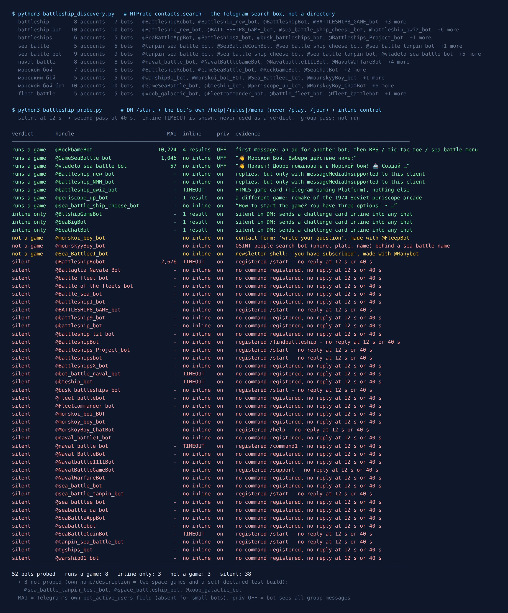

Telegram Battleship Bots: 55 Found, 14 Answered
Battleship has one rule that a group chat breaks straight away: your fleet is secret. The whole game is two people shooting blind at a grid they cannot see. Put that game in a chat where everyone reads everything, and the first thing it needs is a place to hide two boards.
So before I cared which bot was best, I wanted to know where each one hides the ships. On the evening of 24 September 2026 I asked Telegram’s own search which Battleship bots exist, messaged every one it returned, and wrote down what came back. Same method as the card game census, which had the same problem with a hand of cards instead of a grid.
55 bots came back. 14 answered in any way at all, and 38 stayed silent at twelve seconds and again at forty. Not one bot that explained how it plays keeps your board in the group. And one of the bots named “sea battle” turned out to be a people-search service that asks for phone numbers.

How the list was built
Bot directories keep a listing alive for years after the server behind it has gone. So this list came from the platform. The Telegram search box calls an API method named contacts.search, and it only returns accounts that exist right now. I ran ten queries, written down before anything was measured: battleship, battleship bot, battleships, sea battle, sea battle bot, naval battle, морской бой, морський бій, морской бой бот and fleet battle. The Cyrillic ones are the Russian and Ukrainian names of the game, which is how a large share of Telegram’s players actually type it.
Every query returned between five and ten bots, 55 distinct accounts in total. Battleship is a crowded shelf. Crowded with what is a different question.
Three I never messaged, because their own descriptions said what they were: @space_battleship_bot is a space RPG with mining, @xoob_galactic_bot is a planetary strategy game, and @sea_battle_tanpin_test_bot calls itself a test build of another bot on the list. The other 52 each got the same three checks: /start in a private chat with twelve seconds to reply, the bot’s own /help, /rules or /menu command if it had registered one, and an inline query as a liveness test. Every bot that stayed quiet got a second pass with forty seconds.
One rule I added after the guess-the-song census the night before, when a “duel” button put me in a live match against a stranger: this probe never sends /play, /join or anything that looks like matchmaking. Pressing “find a game” would put someone real on the other side of a board I had no intention of finishing.
Where your fleet actually hides
Every bot that told me how it plays solves the secrecy problem the same way: it takes the boards out of the group. There are three ways to do that. (Two bigger bots, @GameSeaBattle_bot and @RockGameBot, invite you to add them to a group but only showed me menus, so I can’t say where their boards live.)
1. Two private chats and a join code
@sea_battle_ship_cheese_bot explained itself better than any other bot on the list. Its /start reply is a manual: choose /new_game, the bot sends you a code like /join [game-code], you pass that code to a friend, your friend enters it in their own chat with the bot, and the bot decides at random who shoots first. There are also buttons for a public game and a game against the bot.
That is the paper version of Battleship rebuilt for Telegram. You and your opponent each talk to the bot privately, so each of you sees only your own grid. The bot is the referee sitting between two private chats. @vladelo_sea_battle_bot works the same way (new game with a friend, join a game, play the bot at any difficulty) and its welcome message points to a GitHub project, which almost nobody else on the list does.
Both bots carry a platform flag called bot_nochats, which means Telegram will not let you add them to a group at all. For Battleship that is the design, not a limitation: a group is exactly where a secret board cannot live.
2. An inline challenge card
@SeaBigBot and @SeaChatBot ignored /start completely. Under the rules of my older censuses that made them silent, and I would have filed them as dead. But both answered the inline test straight away. Type the bot’s username in any chat and a card appears: “⛵ ВЫЗОВ НА МОРСКОЙ БОЙ ⛵” (a challenge to a sea battle), on a 6×6 board rather than the classic 10×10. The two use the same template, word for word, so they are almost certainly one product under two names. @BtlshipGameBot did the same, returning one inline result titled “Battleship”.
This is inline mode, and it is how the chess bots worked in the board game census too. The bot never joins your group. You send the challenge into the chat, someone taps it, and the actual board opens somewhere private. A probe that only sends /start misses it every time.
3. A game window that is not a chat at all
@battleship_qwiz_bot replied with no text at all, just a single game card and one button: “Play Морской Бой: Квиз-Эпопея”. That card is Telegram’s Gaming Platform, the older way to ship an HTML game through a bot, where the game runs in its own window and the chat only shows the scoreboard. Despite the name, the bot’s description is one line of filler (“Кекккекк жми”, roughly “heh-heh, press”), so I cannot tell you whether the game behind the card is Battleship, a quiz, or both.
@GameSeaBattle_bot (1,046 monthly users on Telegram’s counter) uses a menu: find a game, play with a friend, invite a friend for a skin, a shop with a coin balance, and an “add to chat” link that asks for admin rights. It is also one of only three bots on the list with privacy mode off, which means that once it is in your group it reads every message, not just commands. Telegram’s own documentation says it only recommends that when it is “absolutely necessary”. A Battleship bot has no obvious reason to need it.
Want a game without adding a bot?
The free Party Game runs inside Telegram itself, so there’s nothing to add to your group, no admin rights, and nothing reading the chat: Would You Rather, Never Have I Ever, Truth or Dare and quiz rounds, from two players up. There’s no Battleship in it.
Open the Party Game No Telegram? It runs in a browser too: charliemorrison.dev/party-gameThe “sea battle” bot that searches for people
This is the finding I would put at the top if I were only allowed one.
@mourskyyBoy_bot is named “Морський бій”, the Ukrainian name of the game, and it came back on the Ukrainian query. It has registered commands that look like a game: /start, /menu, /faq, /top. It did not answer /start. It answered /faq with four messages, and none of them were about ships.
The first said “Welcome to Dyxless”. The second described itself, in its own words, as an “OSINT bot for finding and analysing information about people”, with a mirror website. The third asked me to “enter search data” and listed what it accepts: a phone number, a car licence plate, a username, a full name with a date of birth, an email address, a Telegram handle. The fourth was an FAQ with buttons for “Buy requests” and “Earnings”.
I did not search for anything, and I am not linking it. The point is the disguise: a people-search service under the name of a children’s game, in the search results of the language whose speakers are most likely to type it. If you or your kids go looking for Battleship on Telegram in Ukrainian, a bot that asks for phone numbers is one of the five results.
Shells wearing the name
The people-search bot is the worst of them, but it is not the only account using the game’s name for something else:
@Sea_Battlee1_bot(“Морський бій”) replied “Congratulations! You have subscribed to Морський бій” and then advertised the no-code builder it was made with. It is a newsletter shell with nothing to play.@morskoi_boy_bot(“Морской бой”) replied “Write your question and you will get an answer soon”. It is a contact form built with another no-code service.@periscope_up_botis a real game, just a different one. It is a remake of the Soviet “Морской бой” arcade machine from the 1970s: you look through a periscope and fire torpedoes at moving ships. It says so clearly in its reply. It is not the grid game.@RockGameBot(10,224 monthly users, the biggest bot on the list by Telegram’s count) is a real multi-game bot with rock-paper-scissors, tic-tac-toe and Battleship. But the first message it sent me was an ad for a different bot (“Who do you want a video message with?”, with four buttons all pointing to the same third-party link), and only then its own welcome. Its inline mode returned four results; the two I could read were rock-paper-scissors and tic-tac-toe challenges.
Two more bots, @Battleship_new_bot and @battleship_NMH_bot, replied with a message my client could not read at all: no text, no buttons, just a media type Telegram’s own reference calls messageMediaUnsupported, meaning the client is too old to show it. That is the same thing the biggest chess bot did in the board game census. A reply I cannot read is still a reply, so they count as answering.
The 38 that never answered
38 of the 52 bots I messaged said nothing at twelve seconds and nothing again at forty. Most of them have inline mode switched off as well, so there was no second way to reach them.
The quiet list includes the most obvious names on the shelf: @battleship_bot, @BattleshipBot, @sea_battle_bot, @seabattlebot, @naval_battle_bot. Short usernames get claimed early and kept for years, running or not. @BattleshipBot still describes itself as a way to “play battleship with your friends, or on your own against an AI”.
The one that stings is @BattleshipRobot. It is the only dedicated Battleship bot with a sizeable count on Telegram’s own meter, 2,676 monthly users, and its description reads like a working game: “share with a friend, arrange your ships, wait for your opponent”. It said nothing at twelve seconds or at forty, and its inline query timed out, meaning Telegram passed the query on and no server replied. That is the strongest sign of a backend being down that this test can produce, but it is still a reading from one evening, not a verdict. @seabattle_ua_bot, whose Ukrainian description is a line-by-line translation of @BattleshipRobot’s, was silent too.
Compare the survival rate across this series: 38 of 52 silent here, against 8 of 17 for board games, 10 of 26 for card games and 23 of 27 for guess-the-song bots. Battleship is one of the most-built games on Telegram and one of the most abandoned: a perfect weekend project, and very few second versions.
For a group that would rather not add a bot
The Telegram Party Pack is 255 group-chat prompts — 45 Never Have I Ever statements, 30 Would You Rather dilemmas, 110 Truth or Dare — as copy-paste text and ready-made poll blocks. There is no Battleship in it. It’s for the nights when you want the chat itself to play, without adding anything that reads your messages.
Get the pack — $9.99 Or see which two-player games work without any bot.What I could not test
No game was played to the end. I read menus, instructions and inline cards. I did not create a game and wait for a friend to join, and I deliberately did not press any matchmaking button. A bot can explain its join codes perfectly and still lose a game halfway through.
The group pass did not run. What I say about groups comes from Telegram’s own flags on each bot, not from watching one referee a live group. The flags say what a bot is allowed to do, not how well it does it.
Silent is not the same as dead. Most of the quiet bots have inline mode switched off, so this test had no second way to reach them. @SeaBigBot and @SeaChatBot are the proof: silent in private, working inline.
If you just want to play tonight
- Classic Battleship with one friend:
@sea_battle_ship_cheese_bot. Send/new_game, forward the join code to your friend, and each of you plays in your own private chat, so neither of you can see the other’s fleet. - The open-source one:
@vladelo_sea_battle_bot. Same private-chat model, several bot difficulty levels, and a GitHub project named in its welcome. - A challenge straight into a chat:
@SeaChatBotor@SeaBigBot. Type the username and a space in the chat you want to play in and pick the challenge card. Smaller 6×6 board, so games are quick. Russian interface. - Several mini-games in one bot:
@RockGameBot, if you don’t mind an ad as its first message. - Nostalgia:
@periscope_up_bot, the Soviet periscope arcade machine, not the grid game. - Whatever you pick, send
/startin private and wait fifteen seconds first, try the inline query if it stays quiet, and walk away from anything that asks for a phone number.
If you want other games for two, the two-player guide covers the ones that need no bot at all, the board game census covers chess, checkers and backgammon, and the card game census shows how bots deal a private hand in a public chat, the same problem as a hidden fleet. For a whole evening, the game night guide covers what breaks first in a busy chat.
The rules of Battleship have barely changed since it was played with pencil and paper. The bots change every month, so the date at the top matters more than the ranking. Fifteen seconds of /start tells you more than any list, this one included.